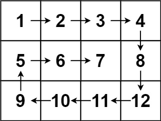

books / hot100 / 03-题解 / 06-矩阵
54. 螺旋矩阵
| 题目信息 | 内容 |
|---|---|
| 难度 | 中等 |
| 核心模式 | 四边界模拟 |
| 时间复杂度 | O(mn) |
| 空间复杂度 | O(1) |
题目与约束
给你一个 m 行 n 列的矩阵 matrix ，请按照 顺时针螺旋顺序 ，返回矩阵中的所有元素。
示例 1：

输入：matrix = [[1,2,3],[4,5,6],[7,8,9]]
输出：[1,2,3,6,9,8,7,4,5]
示例 2：

输入：matrix = [[1,2,3,4],[5,6,7,8],[9,10,11,12]]
输出：[1,2,3,4,8,12,11,10,9,5,6,7]
提示：
m == matrix.lengthn == matrix[i].length1 <= m, n <= 10-100 <= matrix[i][j] <= 100
核心不变量
走完一条边立刻收缩对应边界，并防止重复访问。
完整推导
思路推导
-
直觉与痛点（碰壁转向法）：
搞一个二维布尔数组记录走过的位置，然后定义四个方向。一直往前走，如果遇到边界或者走过的格子，就右转（改变方向）。
痛点：需要额外的 O(M × N) 空间来记录是否访问过，且方向控制代码写起来比较繁琐。
-
破局思路（四边界收缩法 / 剥洋葱）：
我们可以直接定义四个边界：
top（上）、bottom（下）、left（左）、right（右）。螺旋遍历的本质，就是在一圈一圈地“剥洋葱”：
- 向右走：沿着
top边界，从left走到right。走完后，最上面这一行就被剥掉了，top++（上边界下移）。 - 向下走：沿着
right边界，从top走到bottom。走完后，最右边这一列被剥掉，right--（右边界左移）。 - 向左走：沿着
bottom边界，从right走到left。走完后，bottom--（下边界上移）。 - 向上走：沿着
left边界，从bottom走到top。走完后，left++（左边界右移）。
- 向右走：沿着
-
致命陷阱（非正方形的折返跑）：
如果矩阵是 3 行 4 列。当你走完一圈，剩下的可能只有单独的一行或者一列。此时，你执行完“向右走”和“向下走”后，所有的元素其实已经遍历完了。
如果你不加判断直接继续执行“向左走”和“向上走”，指针就会发生“倒退重复遍历”！
解决方案：在执行“向左”和“向上”之前，必须严格检查
top <= bottom和left <= right是否仍然成立。Java 实现
import java.util.ArrayList;
import java.util.List;
class Solution {
public List<Integer> spiralOrder(int[][] matrix) {
List<Integer> res = new ArrayList<>();
if (matrix == null || matrix.length == 0 || matrix[0].length == 0) {
return res;
}
// 1. 定义四个边界
int top = 0;
int bottom = matrix.length - 1;
int left = 0;
int right = matrix[0].length - 1;
// 2. 只要边界还没有错乱（交错），就继续剥洋葱
while (top <= bottom && left <= right) {
// 步骤 1：从左到右，紧贴上边界 top
for (int j = left; j <= right; j++) {
res.add(matrix[top][j]);
}
top++; // 上边界被剥离，向下收缩
// 步骤 2：从上到下，紧贴右边界 right
for (int i = top; i <= bottom; i++) {
res.add(matrix[i][right]);
}
right--; // 右边界被剥离，向左收缩
// 核心防御：必须在向左和向上前，确认当前是否还有有效的行和列！
// 防止在单行或单列的情况下发生逆向重复遍历
if (top <= bottom && left <= right) {
// 步骤 3：从右到左，紧贴下边界 bottom
for (int j = right; j >= left; j--) {
res.add(matrix[bottom][j]);
}
bottom--; // 下边界被剥离，向上收缩
// 步骤 4：从下到上，紧贴左边界 left
for (int i = bottom; i >= top; i--) {
res.add(matrix[i][left]);
}
left++; // 左边界被剥离，向右收缩
}
}
return res;
}
}
复杂度
- 时间复杂度：O(M × N)。矩阵中的每个元素都被且仅被访问了一次。
- 空间复杂度：O(1)。除了作为答案返回的
List之外，只使用了四个整型变量来记录边界。
易错点与扩展
- 考点延伸：螺旋矩阵 II (LeetCode 59)
- 面试官极其喜欢在你做完这道题后，立马抛出它的兄弟题：“给你一个正整数 n，生成一个包含 1 到 n2 的所有元素，且元素按顺时针顺序螺旋排列的 n × n 正方形矩阵。”
- 思路秒杀：这道题甚至更简单！因为是正方形，连“单行单列防越界”的
if判断都不需要写全。逻辑一模一样，只不过是从读取矩阵res.add(matrix[i][j])变成了写入矩阵matrix[i][j] = num++。